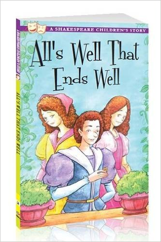

Our remedies of in ourselves do lie
Which we ascribe to heaven. The fated sky
Gives us free scope, only doth backward pull
Our slow designs when we ourselves are dull.
What power is it which mounts my love so high,
That makes me see, and cannot feed mine eye?
The mightiest space in fortune nature brings
To join like likes and kiss like native things.
Impossible be strange attempts to those
That weigh their pains in sense and do suppose
What hath been cannot be. Who ever strove
To show her merit that did miss her love?